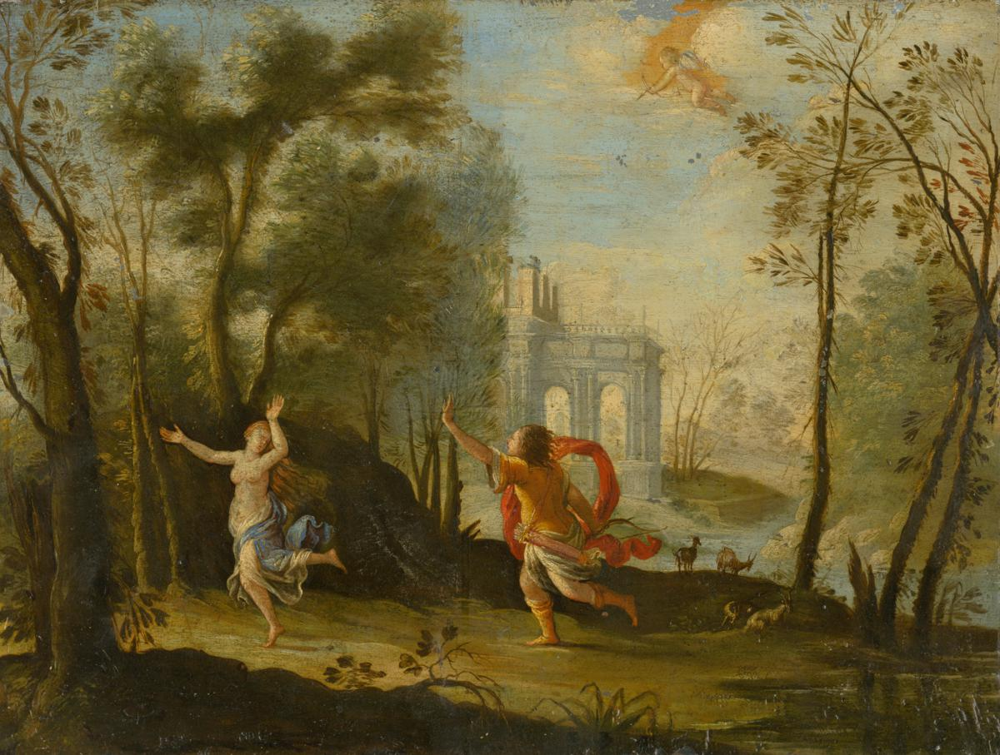

A pesar de aquella negativa, Apolo no perdió la esperanza. Ni siquiera parecía disgustado, pues ¿cómo iba a molestarse con una muchacha a la que amaba con locura? Miraba los ojos de Dafne, y no podía creerse que fuesen tan bellos; se fijaba en sus manos, y le parecía imposible concebir otras más delicadas. Todo en Dafne le gustaba: su largo cuello y su espesa melena, sus dientes blancos y sus labios de un rojo encendido, sus ojos oscuros y su piel del color de la nieve. Se moría por abrazarla, por acariciar sus mejillas, por cubrirla de besos... Dafne reparó en los ojos de Apolo y, de repente, tuvo miedo, porque descubrió en ellos la mirada de un ser obsesionado con una sola idea. Pensó que Apolo sería capaz de cualquier cosa con tal de abrazarla, y se asustó tanto que echó a correr por el bosque.
-¡No te vayas, Dafne! -gritó Apolo- no quiero hacerte daño!
Pero Dafne se perdió de vista enseguida. Apolo echó entonces a correr tras la ninfa igual que el lobo tras el cordero. Durante la carrera, Dafne le pareció más hermosa que nunca, pues el viento desnudaba sus hombros, agitaba su túnica y formaba graciosas ondas en su larga melena. Dafne corría tan aprisa que, en cierto instante, se creyó a punto de perder el aliento. Las zarzas del bosque le arañaban los tobillos, y los guijarros del suelo se le clavaban en los pies, pero no notaba el dolor, porque lo único que sentía era un miedo terrible. Tenía que correr, huir, ponerse a salvo, pues estaba segura de que, si se detenía, Apolo se lanzaría sobre ella, loco de amor.

-¡Dafne! -oyó decir.
La voz sonó en aquel momento más próxima que nunca. Dafne volvió la cabeza, y entonces vio que Apolo estaba a punto de rozarle el hombro. La ninfa palideció: prefería morir antes que soportar las caricias de Apolo, el calor de su aliento, la locura de sus ojos... Entonces Dafne vio que se acercaba a las orillas del río Peneo y pensó que allí se encontraba la única salvación posible.
-¡Padre, ayúdame! -gritó con todas sus fuerzas.
<¿Cómo se llama el río?